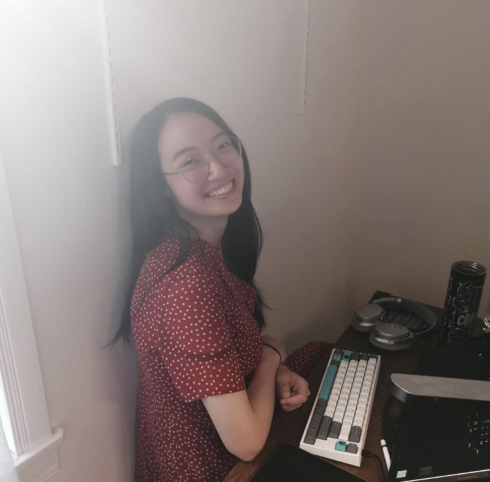

Jueqi Wang
Ph.D. CandidateDepartment of Electrical & Computer Engineering
Boston University
Email: jueqiw at bu dot edu
Links: Google Scholar

Driven by a passion for understanding and improving human health, I am broadly interested in leveraging existing sensory and biomedical data to enhance well-being, performance, and overall quality of life. I'm currently working at the intersection of imaging and genetics to better understand Autism. Specifically, I'm developing methods to address the challenge of missing modalities in multimodal data.
Publications:
-
Learning Explainable Imaging-Genetics Associations Related to a Neurological Disorder
MICCAI 2025
Jueqi Wang, Zachary Jacokes, John Van Horn, Michael Schatz, Kevin Pelphrey, Archana Venkataraman
-
QID^2: An Image-Conditioned Diffusion Model for Q-space Up-sampling of DWI Data
MICCAI CDMRI Workshop 2024 [PDF] [Code]
Zijian Chen*, Jueqi Wang*, Archana Venkataraman (equal contribution)
-
InverseSR: 3D Brain MRI Super-Resolution Using a Latent Diffusion Model [Early Accepted, top 14%]
MICCAI 2023 [PDF] [Code]
Jueqi Wang, Jacob Levman, Walter Hugo Lopez Pinaya, Petru-Daniel Tudosiu, M. Jorge Cardoso, Razvan Marinescu
-
Temporally Adjustable Longitudinal Fluid-Attenuated Inversion Recovery MRI Estimation / Synthesis
for Multiple Sclerosis MICCAI BrainLes workshop 2022 [PDF] [Code]
Jueqi Wang, Derek Berger, Erin Mazerolle, Othman Soufan, Jacob Levman
-
Multichannel input pixelwise regression 3D U-Nets for medical image estimation with 3 applications
in brain MRI (short paper) MIDL 2021 [PDF]
[Code]
Jueqi Wang, Derek Berger, David Mattie, Jacob Levman
Community Outreach:
Reviewer:Transactions on Medical Imaging, Medical Physics, MIDL 2025